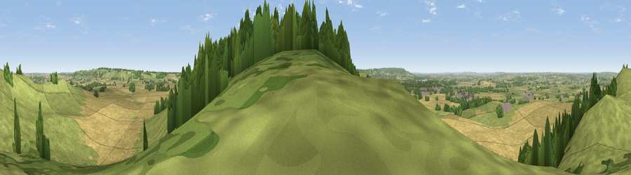

Viewpoint near Ivinghoe
#7693 in England · top 5% of its area beats it · near IvinghoeThe view, rendered

A 360° render of this exact spot computed from the terrain model, tree cover and land cover — summer colours, afternoon light, calibrated against photographs of famous viewpoints. Real trees, hedges and buildings will differ in detail.
The panorama
Grey silhouette: terrain skyline in each direction (720 bearings, Earth curvature and refraction included). Dashed green: skyline with trees (+15 m) and buildings (+8 m) as obstacles. Blue strip: how far the ground is visible on each bearing.
Where the view opens
Wedge length = distance to the farthest visible ground on that bearing (vegetation-aware). Rings at 10, 25 and 50 km.
What fills the view
47% grassland · 39% cropland · 12% woodland · 2% built-up
Angular shares of the visible panorama (visual magnitude), not map area. Landscape diversity 0.46 (0–1 Shannon).
Key numbers
More beautiful places nearby
The staircase of upgrades: each row has a higher view potential than everything closer. Driving times are estimates from straight-line distance, calibrated against real road routing — check an actual route before setting out.
| Place | Direction | Drive | Score |
|---|---|---|---|
| Beacon Hill | N · 1 km | ~2 min | 74.1 |
| Viewpoint near Halton | SW · 9 km | ~18 min | 74.3 |
| Coombe Hill Monument | SW · 15 km | ~26 min | 75.5 |
| Viewpoint near Woolstone | WSW · 72 km | ~96 min | 76.7 |
| Viewpoint near Meon Vale | WNW · 84 km | ~108 min | 77.0 |
| Broadway Hill | WNW · 87 km | ~111 min | 77.7 |
| Cleeve Hill | W · 98 km | ~122 min | 79.8 |
| Nottingham Hill | W · 99 km | ~123 min | 80.9 |
51.83594, -0.60775 · source: screening · position refined by local search. Computed location — check access rights before visiting.